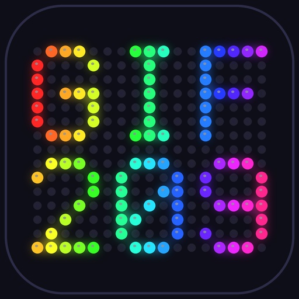
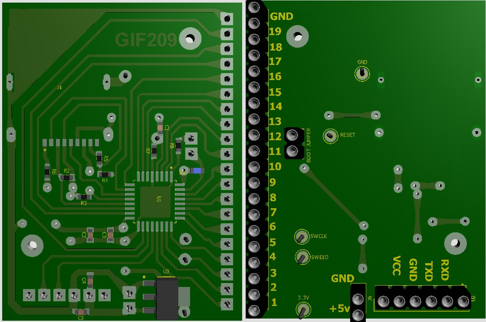
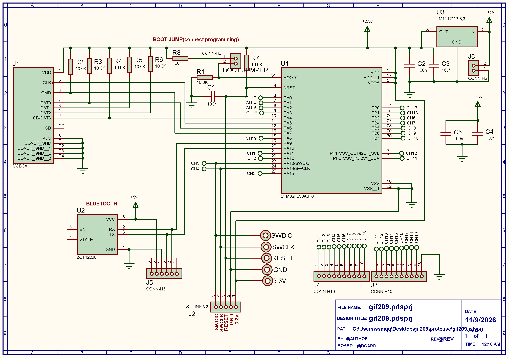

GIF209 is a professional, open-source hardware controller based on the STM32F030K6T6 ARM Cortex-M0 microcontroller. It is specifically designed to drive up to 19 independent WS2812/WS2811 LED strips and features standalone animation recording and playback via an SD card.


| Feature | Specification |
|---|---|
| Microcontroller | STM32F030K6T6 (ARM Cortex-M0, 48 MHz, LQFP32) |
| Channels | 19 independent LED data lines (A1–A19) |
| Pixels per Channel | Up to 256 (Total 4,864 pixels) |
| Storage | SD Card via SPI1 (Raw access, no filesystem) |
| Communication | Bluetooth HC-05 (UART, 115200 baud; set the module with AT+UART=115200,0,0) |
| Supported LEDs | WS2812, WS2812B, WS2811, WS2813, WS2815 |
Channels follow the physical pin order of the LQFP32 package to make PCB routing easier: channel 1 starts at pin 21 and runs up to pin 30 (channel 10), then continues from pin 2 (channel 11) up to pin 18 (channel 19).
Reserved Pins:
The firmware talks to the Bluetooth module at a fixed UART speed, set by UART_BAUD at the top of main.c (default 115200). The module must use exactly the same speed. Most modules ship at 9600, so the speeds have to be matched once before the first connection.
The speed of a module cannot be changed over its own Bluetooth link. Use a 3.3V USB-to-serial adapter connected directly to the module.
If your module is still at the factory speed of 9600, change one line in main.c and flash:
#define UART_BAUD 9600u
Everything works the same, only sending long animations takes longer than at 115200.
OK (or a similar reply).UART_BAUD in main.c is 115200u, flash the firmware, then connect the module to the board.| Module | Type | Factory speed | How to enter AT mode | Line ending | Set 115200 |
|---|---|---|---|---|---|
| HC-05 | Classic SPP | 9600 (AT mode: 38400) | KEY/EN pin high (3.3V) at power-up | CR + LF | AT+UART=115200,0,0 |
| HC-06 | Classic SPP | 9600 | Any time while not paired | None | AT+BAUD8 |
| JDY-31 | Classic SPP | 9600 | Any time while not connected | CR + LF | AT+BAUD8 |
| JDY-33 | SPP + BLE | 9600 | Any time while not connected | CR + LF | AT+BAUD8 |
| JDY-23 | BLE 5.0 | 9600 | Any time while not connected | CR + LF | AT+BAUD8 |
AT gets no answer. Test with AT+VERSION instead. If the new speed does not apply, power-cycle the module.AT+BAUD6 (38400) and set UART_BAUD to 38400u.AT+BAUD.The values come from the module datasheets. Clones can differ, so check the datasheet of your own module if a command is not accepted.
INFO. The controller answers with its status (frames=.. ch=..).01FF00000005wait as one line. The first 6 LEDs of channel 1 should turn red and the controller answers next.The most common reason is a speed mismatch between the module and UART_BAUD. Also check that module TX goes to PA10 and module RX goes to PA9, and that the line ending of your terminal is set to newline.
Commands are sent via Bluetooth as plain text. Every line must end with a newline character (\n or \r\n). The controller acknowledges most commands with next for flow control.
To control LEDs, send a 12-character hex string representing 6 variables:
A R G B S E
| Variable | Meaning | Range | Hex Range |
|---|---|---|---|
| A | Channel Address | 1 – 19 | 01 – 13 |
| R | Red Intensity | 0 – 255 | 00 – FF |
| G | Green Intensity | 0 – 255 | 00 – FF |
| B | Blue Intensity | 0 – 255 | 00 – FF |
| S | Start Pixel | 0 – 255 | 00 – FF |
| E | End Pixel | 0 – 255 | 00 – FF |
Example: 01FF00000005 sets Channel 1, pixels 0 to 5, to Red (FF0000).
| Command | Description | Response |
|---|---|---|
wait | Clears untouched channels (used as a frame separator) | next |
wait=N | Clears untouched channels and waits N milliseconds | next |
REC | Starts recording frames to the SD card | REC OK |
END | Stops recording and saves the header | SAVED n |
PLAY | Plays the recorded frames once | PLAY DONE |
LOOP | Plays the recorded frames continuously (loop) | STOPPED |
STOP | Stops playback or recording immediately | STOPPED |
AUTO=0 | Enables auto-loop on boot (Default) | OK AUTO=0 |
AUTO=1 | Disables auto-loop (waits for user command) | OK AUTO=1 |
ERASE | Clears the recording header (frames=0) | ERASED |
INFO | Shows current status (frames, channels, delay, auto) | frames=.. ch=.. |
DUMP | Sends raw data of all stored frames to terminal (for debugging) | HDR raw:... |
The GIF209 Web App allows you to convert images or draw custom pixel art, and then generate the exact hex commands needed for the controller. It automatically handles the REC and END wrappers and formats everything perfectly.
🎞️ GIF import: drop an animated GIF into the app and it is split into frames automatically. Each frame becomes one line of commands, and the GIF frame delays can be converted to wait=N.
wait=N.GIF splitting needs a browser with ImageDecoder support (Chrome or Edge). In other browsers the GIF is added as a still image.
1. The SD card is accessed in RAW mode. There is no filesystem (FAT32) on it. The controller will overwrite sectors starting around 2000. Always use a spare or blank SD card.
2. The STM32 outputs 3.3V logic, while 5V LED strips (WS2812B) officially expect a higher input level (about 70% of the supply, i.e. 3.5V). In practice most strips work fine when connected directly with a short data wire and a common ground, and GIF209 has been tested this way. A logic level converter (like 74HCT245 or 74HCT125) is only needed when you notice problems, for example a long data cable, flickering or wrong colors on the first LEDs, or a strip that does not accept 3.3V.
The two SWD programming pins (PA13 and PA14) are used as LED outputs on this board, so the firmware cannot be flashed or debugged through SWD. Instead, the STM32 built-in bootloader is used over UART (PA9 / PA10), and it only starts when the BOOT0 pin is held high during reset. This is the job of the BOOT jumper.
main.c (compiled) with a UART bootloader tool such as STM32CubeProgrammer (UART mode) or stm32flash.Important: if the BOOT jumper stays connected, the board will enter the bootloader on every reset and the LEDs will not work. Always remove the jumper after flashing.
Get the source code, PCB schematics, and the latest firmware updates from the repository.